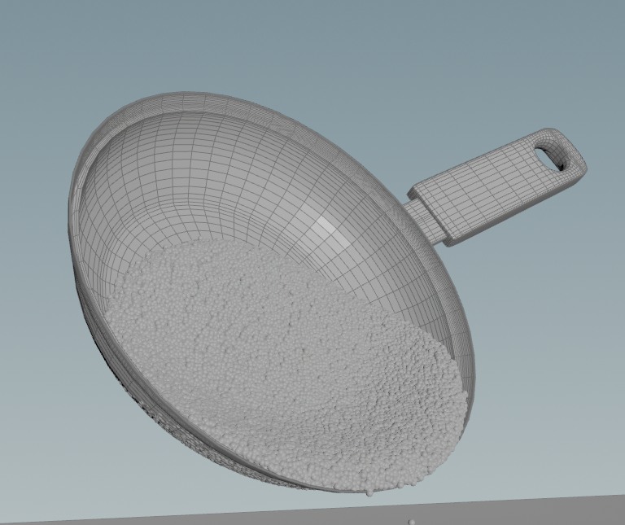
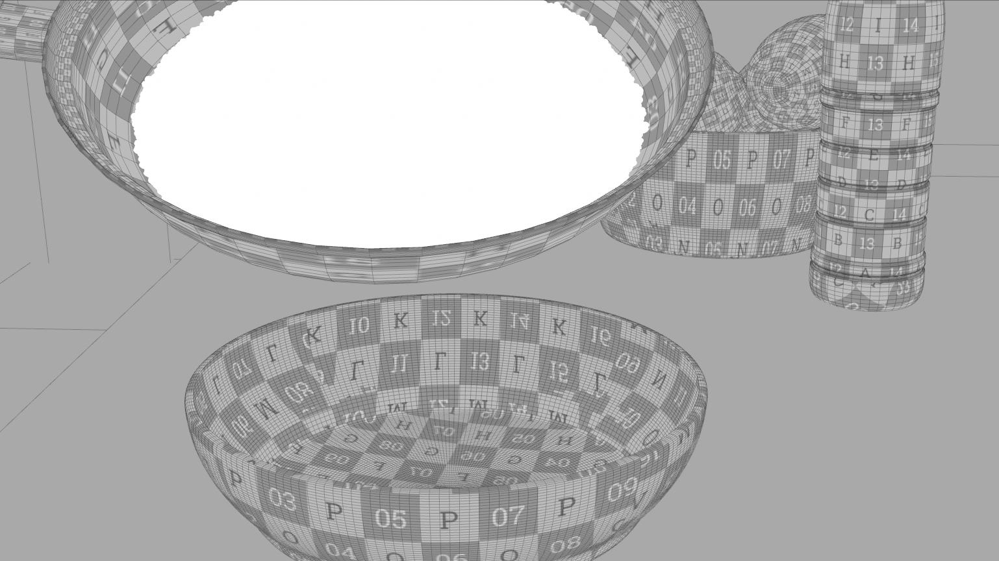

Week8
VSFX 728 - Week 8
Hello, this is my final project of the VSFX 728's blog!
May 10
Things To Do:
1. Set up the scene layout (Based on the reference)
2. Run a simple test of the tomato sauce pouring (include viscosity and animation realism)
This week, I will begin testing the tomato sauce pouring using MPM.
First, I tried matching the angle of the pot and dropping an MPM source shaped like a sphere into it. However, I found it hard to control—the sphere often didn’t fall into the right area, especially missing the upper part of the pot's interior.



So instead, I decided to place the pot flat at the beginning and pour the liquid in from above. Then I animate the pot’s movement afterward. This approach is not only easier to control but also more realistic, as it matches how liquids are usually poured in real life.


Problem-solving:
The problem I encountered this week was that once the pot started moving, the particles went through it.
I adjusted two things. First, I changed the collider type from Animated (Rigid) to Animated (Deforming). I also looked up the documentation to understand the difference. Because Animated (Deforming) rebuilds both the shape and velocity every frame, it takes more time to compute.
Although Animated (Rigid) is normally sufficient for rotating objects, in my case it didn’t prevent the particles from passing through. Only Animated (Deforming) worked reliably. I believe this is due to the pot rotating quickly and the particles being very close to the collision surface.
Another thing I changed the Particle Separation and Grid Scale to get better resolution. Particle Separation controls how dense the particles are, and Grid Scale affects how fine the background grid is. Lowering these values helped make the simulation more detailed and stable.


Before
After
This is the scene I built based on the reference.
